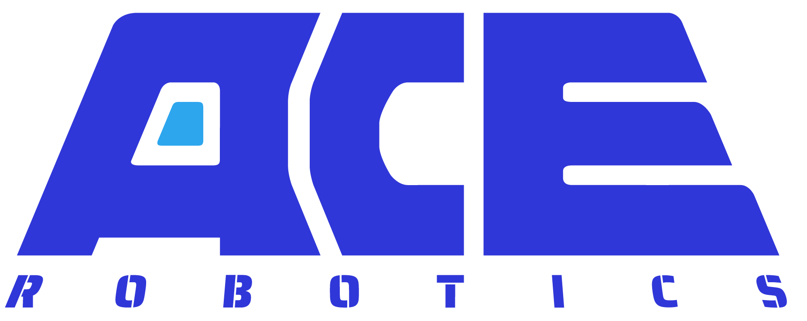
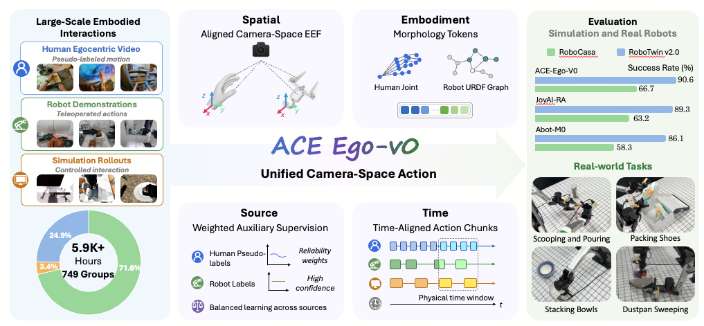
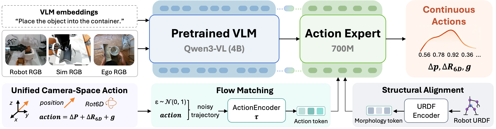
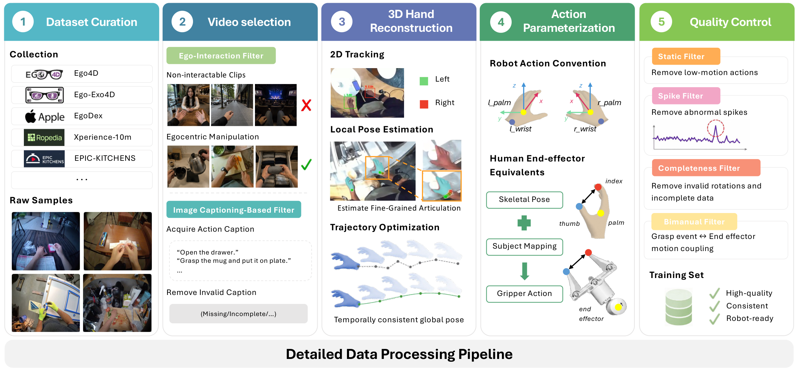
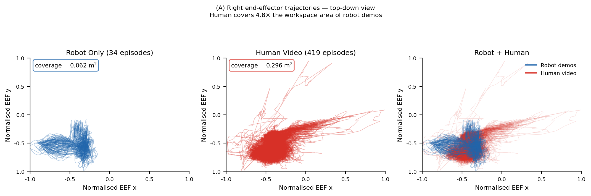
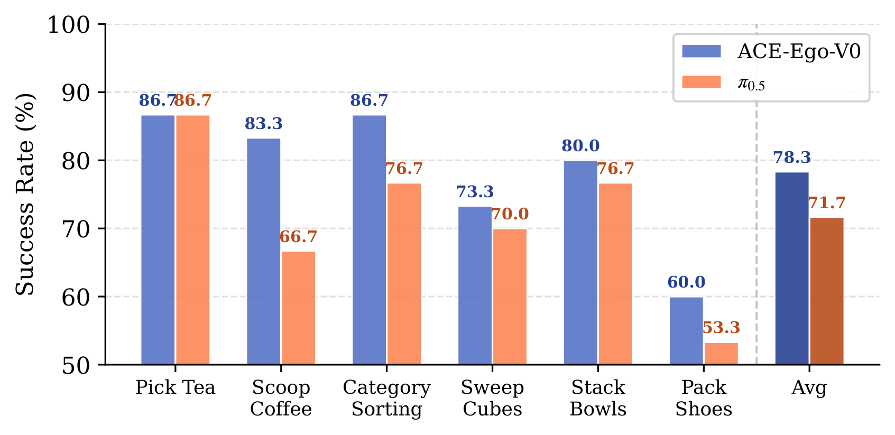

Project Page · Jun 2026
ACE-Ego-0: Unifying Egocentric Human and Robotic Data for VLA Pretraining
1ACE Robotics
2CUHK MMLab
3CUHK, Shenzhen
4SJTU
5THU
*Equal contribution · †Project lead · ✉Corresponding author
Overview
ACE-Ego-0 unifies egocentric human videos, multi-embodiment robot demonstrations, and simulation rollouts for VLA pretraining.

Abstract
Vision-language-action (VLA) models benefit from large-scale and diverse embodied data, yet scaling robot trajectory collection is costly and labor-intensive. Large-scale egocentric human videos provide complementary real-world supervision, but joint training on human and robot data is difficult because their action spaces, embodiment structures, temporal dynamics, and supervision quality do not match.
We introduce ACE-Ego-0, a unified VLA pretraining framework that converts human egocentric videos into robot-format pseudo-action trajectories, aligns heterogeneous sources through camera-space actions, morphology conditioning, and time-aligned action chunking, and trains with reliability-aware human auxiliary supervision. ACE-Ego-0 pretrains on 4.53K hours of robot and simulation data plus 1.48K hours of pseudo-action-labeled egocentric human data, achieving state-of-the-art performance on RoboCasa GR1 TableTop and RoboTwin 2.0 with strong real-world bimanual transfer.
Method Overview
ACE-Ego-0 resolves spatial, structural, temporal, and label-quality mismatches between human egocentric video and robot trajectories.

Camera-Space Actions
Robot end-effector trajectories and reconstructed human pseudo-actions are represented in the observation-centric camera frame.
Morphology Conditioning
Robot URDF graph embeddings and learned human surrogate tokens condition the action expert without changing the VLM backbone.
Reliability-Aware Training
Sensor-logged robot actions supervise the primary loss, while noisy human pseudo-actions contribute through quality-weighted auxiliary losses.
Data Construction
ACE-Ego-0 converts raw human egocentric videos into robot-compatible pseudo-action trajectories through curation, reconstruction, action extraction, and filtering.

Human Video Coverage
Task-matched egocentric human videos provide complementary action coverage for data-scarce robot fine-tuning tasks.

Real-Robot Demonstrations
ACE-Ego-0 is deployed on a bimanual ARX platform with a head-mounted camera and camera-space delta end-effector commands.
Results
ACE-Ego-0 improves simulation benchmarks and real bimanual manipulation against strong VLA baselines.
RoboCasa GR1 TableTop
| Method | Average Success |
|---|---|
| GR00T-N1.6 | 47.6 |
| Qwen3PI | 43.9 |
| FLARE | 55.0 |
| ABot-M0 | 58.3 |
| JoyAI-RA | 63.2 |
| DIAL | 70.2 |
| ACE-Ego-0 | 72.8 |
RoboTwin 2.0
| Method | Easy | Hard |
|---|---|---|
| pi_0.5 | 82.74 | 76.76 |
| Motus | 88.66 | 87.02 |
| LingBot-VLA | 88.56 | 86.68 |
| ABot-M0 | 86.06 | 85.08 |
| JoyAI-RA | 90.48 | 89.28 |
| ACE-Ego-0 | 91.12 | 90.62 |

Citation
@misc{li2026aceego0unifyingegocentrichuman,
title={ACE-Ego-0: Unifying Egocentric Human and Robotic Data for VLA Pretraining},
author={Hao Li and Ganlong Zhao and Yufei Liu and Haotian Hou and Guoquan Ye and Tongyan Fang and Chunxiao Liu and Siyuan Huang and Jianbo Liu and Xiaogang Wang and Hongsheng Li},
year={2026},
eprint={2606.17200},
archivePrefix={arXiv},
primaryClass={cs.RO},
url={https://arxiv.org/abs/2606.17200},
}